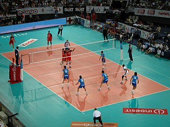

NHỮNG KỸ THUẬT CƠ BẢN

Các vị trí trên sân
Có 5 vị trí trên sân đối với các đội ở cấp độ ưu tú. Chuyền 2, Outside Hitter/Left Side Hitter, Middle Hitter, Opposite Hitter/Right Side Hitter (Tay đập ngoài/Tay đập bên trái, Tay đập giữa, Tay đập đối diện/Tay đập phải và Libero/Chuyên gia phòng thủ). Mỗi vị trí đều có một vai trò riêng đặc biệt trong việc chiến thắng trận đấu.Chuyền 2 có nhiệm vụ điều phối cho đợt tấn công của toàn đội. Họ phải là người chạm bóng lần thứ 2 và trách nhiệm chính trong việc đưa bóng đến đúng vị trí của các tay đập để ghi điểm. Họ phải có khả năng làm việc với các tay đập, sắp xếp để giữ nhịp cho toàn đội và chọn tây đập phù hợp cho đợt tấn công để chuyền banh. Chuyền 2 phải người nhanh nhẹn, có kinh nghiệm, chiến thuật đúng đắn và có tốc độ trong việc di chuyển khắp mặt sân.
Libero là chuyên gia phòng thủ, người có trách nhiệm đỡ bước 1/ cứu bóng cho toàn đội. Họ thường là người có phản ứng nhanh nhất trên sân và khả năng bắt bước 1 cực tốt. Libero có nghĩa là "tự do" đồng nghĩa với việc họ có thể thay thế cho bất kì ai trên sân trong trận đấu. Họ không cần phải cao, vì họ không cần chơi bóng trên lưới, điều này cho phép những vận động viên thấp với khả năng bắt bước 1 tốt và kĩ năng phòng thủ siêu hạng có được một vị trí quan trọng trong thành công của toàn đội. Người được chọn là libero trong đội có thể chỉ được quyền thay thế cho một vị trí duy nhất trong đội. Libero phải trang phục khác màu so với các thành viên còn lại trong đội.
Middle blockers (tay chắn giữa) hay Middle hitters (tay đập giữa) là những vị trí có thể triển khai các đợt tấn công chớp nhoáng thường ở gần vị trí của chuyền 2. Họ còn là những chuyên gia phòng thủ, bởi họ vừa phải cố gắng chặn đợt tấn công nhanh của đối vừa phải ngay lập tức lập một hàng chắn kép tại biên. Ở các đội không phải mới tập chơi, mỗi đội đều có 2 middle hitter.
Outside hitters (tay đập ngoài/tay đập biên) hay Left side hitters (tay đập biên bên trái) tấn công từ phía biên trái cọc biên (antenna). Outside hitter thường là tay đập chủ yếu trong đội và nhận hầu hết các đường chuyền từ chuyền 2. Những trái bắt bước 1 không tốt thường được chuyền cho outside hitter hơn là middle hay opposite hitter. Bởi hầu hết các đường bóng chuyền cho outside hitter đều cao, outside hitter có thể mất một khoảng thời gian để tiếp cận bóng, thường là bắt đầu lấy đà từ ngoài vạch biên sân. Trong các trận đấu từ nghiệp dư trở lên, thường có 2 outside hitter ở mỗi đội trong trận đấu.
Opposite hitters hay Right side hitters (tay đập biên bên phải) đảm nhận việc phòng thủ ở khu vực dưới lưới. Nhiệm vụ chính của họ là tạo ra một hàng chắn tốt để chặn cú đập từ outside hitter của đối phương và đóng vài trò là một chuyền 2 phụ. Chuyền 2 của đối phương thường đưa về phía bên phải của antenna.
Có 5 vị trí trên sân đối với các đội ở cấp độ ưu tú. Chuyền 2, Outside Hitter/Left Side Hitter, Middle Hitter, Opposite Hitter/Right Side Hitter (Tay đập ngoài/Tay đập bên trái, Tay đập giữa, Tay đập đối diện/Tay đập phải và Libero/Chuyên gia phòng thủ). Mỗi vị trí đều có một vai trò riêng đặc biệt trong việc chiến thắng trận đấu.